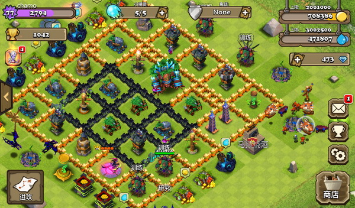
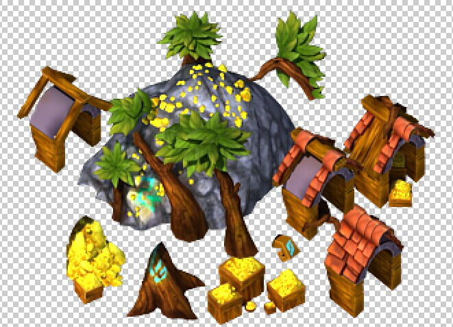
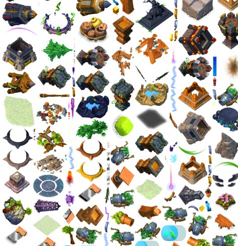
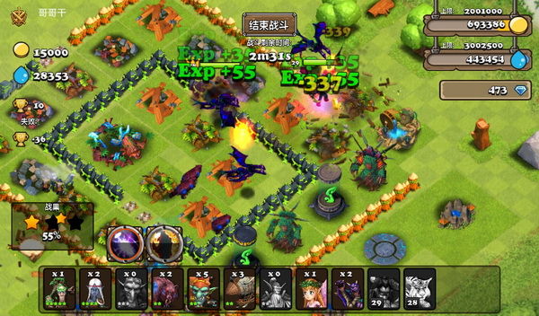

Clash of the Elves is a mobile game developed by me and four other team members, and its type of game play is similar to Clash of Clans. This project was invested by the CEO of Shanghai Storm Information Technology. The development time lasted about 10 months. Our team was consisted of a game designer and four programmers, and I worked as the project manager, and the programmer who is responsible for application architecture, graphic related work and AI. And also took in charge of outsourcing all the artwork. This is the download link for our game (Android Version).
Screen slot of our game
1. Decoded the resource file of Clash of Clans.
2. Set up the graphic framework based on swf format, include effect, particle, animation, projectile and character system.
3. Tried many rendering techniques to enhance rendering efficiency.
4. Optimized AI algorithm using Navigation mesh.
The artwork of Clash of Clans is so amazing that I was very curious about how the artwork was implemented by codes. So I devoted myself into studying the resource file of the game. The resource included two parts: binary files storing the images, animation and 2d skeleton information, and Asccii files storing effects, particles and projectiles information. I found out the function of almost every bits in the binary files and every numbers in Asccii files. The decoding works really involved many creative and complex reverse techniques, inference, intuition and compute graphic knowledge. In the end, we even made a version of our game with completely the same appearance as Clash of Clans.
Here is the document of COC file structures I made.
All the information was extracted from these pure hexadecimal data
How to visually modify tons of art elements, like character, particle and so on, was a big problem for us, because we did not use any visual game engine. My idea was that we could employ some powerful animation visual software. The first thing came to my mind was Flash. Therefore, I studied the details of swf format (the export file format of Flash), and wrote codes to render the swf file on mobile equipment. In this way, we could modify our game graphic elements in Flash and show the result on mobile equipment. The whole framework was powered by many design patterns concepts, which made our game comparable to many file formats, like swf, our custom format which is the final format used in our game and COC file format. This feature allowed the artwork importing work to be under control, and I could easily cooperate with the programmer responsible for logical coding while I was writing the graphic related codes.
One game-object is usually composed of several separated parts, thus reducing the memory consumption which is very critical in mobile game. The object is assembled in Flash.
With the same art assets, the FPS of our game was much lower than COC. I used many methods to locate the bottleneck for rendering and then applied corresponding technique to surpass them. For example I reconstructed the rendering batch system, simplified the pixel shader as much as possible, and so on. I even put the rendering into another thread which took me great efforts, but it proved that this technique was not very effective for our case.
This is the graphic resource for our game. Many small images are merged into big images in order to do batch in render. There are only two big images with size of 4000*4000 pixels in our game.
One of the features of our game is that it involves over 300 hundred characters combating at the same time. At first, I used common A star path-finding algorithm and the performance was terrible. At later time, I realized in this case I should use the navigation mesh.
Screen slot of our game, in combat mode